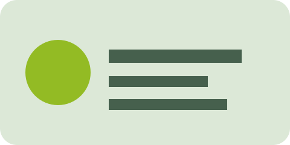

1
Inline event blocking
oncontextmenu + onmousedown return false
Standard選取、複製並在這裡按右鍵。
等待操作…
2
Input event listener
input 上的 contextmenu listener
Standard等待操作…
3
Paste event
paste listener 阻止貼上
Absolute等待操作…
4
Image event listener
圖片上的 contextmenu listener
Standard
等待操作…
5
Alert blocker
右鍵時顯示 alert 並取消事件
Standard等待操作…
6
Pointer events
圖片使用 pointer-events:none
Absolute右鍵目標應恢復成圖片。
7
Overlay + event
透明 overlay 攔截 contextmenu
Absolute等待操作…
8
Overlay + pointer events
圖片 pointer-events:none 且被 overlay 覆蓋
Absolute右鍵目標應恢復成圖片。
9
Selectstart event
selectstart listener 阻止反白
Standard請嘗試選取這段 Sample text。
等待操作…
10
removeAllRanges
mouseup／keyup／contextmenu／touchend 清除選取
Absolute請選取這段文字並放開滑鼠，選取範圍應維持。
等待操作…
11
Keyboard copy blocker
input keydown 阻止 Ctrl/Cmd+C
Standard等待操作…
12
Invisible selection
仍可選取，但 ::selection 使用與文字區相同的顏色
Absolute未安裝時不應看到反白底色；Absolute 應恢復可見底色。
拖曳選取並觀察反白底色。
13
Input overlay
透明 overlay 覆蓋可選取的 input
AbsoluteAbsolute 應讓 input 重新成為事件目標。
14
Paste rollback
input event 在一次新增超過兩字時還原內容
Absolute等待操作…
15
Canvas + overlay
canvas pointer-events:none 且被 overlay 覆蓋
Absolute右鍵目標應恢復成 canvas。
16
CSS background image
普通元素使用 background-image
Native右鍵應開啟，但「另存新檔」會儲存 HTML，因為它不是 img。